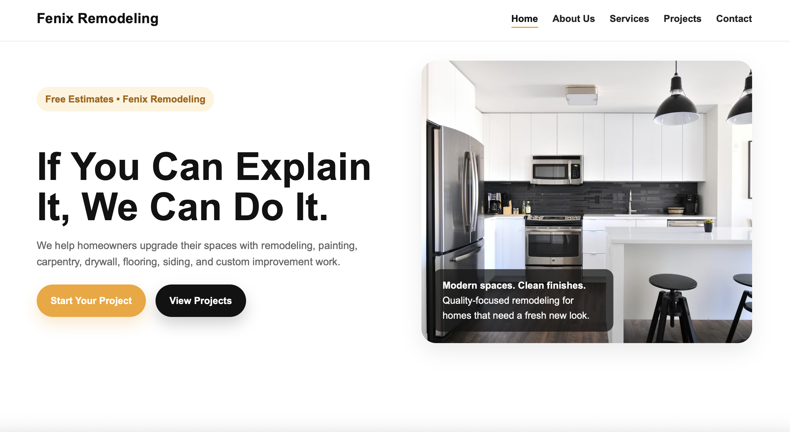

Peer Review 1: Ramirez, Juan

Evaluation
- Submission: Correct Link
- File/Folder Names: Correctly named
- Design:
- The pages font size and contrast is sufficient for accessability and readability. Headings are clear and easy to read. I like how certain headings are more bold while the text below them is lighter.
- The page has site colors and fonts using the standard .css file.
- CRAP:
- Contrast: The images stand out throughout the pages since the background is white which contrasts well. I like how the buttons are yellow and black which help them stand out while the rest of the text is mostly black.
- Repetition: This website uses consistent colors and fonts throughout all the pages. The images for each section match perfectly and overall the website has a good theme.
- Alignment: The alignment is good throughout all the pages, making the website very visually appealing. I like how most of the items under Featured Services have a small description under each section that is different color from the section name, giving it a clean and organized look.
- Proximity: Everything has good spacing and nothing is cluttered together.
- Page has within it:
- Header: Yes
- Main: Yes
- Footer: Yes
- Navigation is present and works
- Header has site/brand name: Yes
- Main starts with name of page as h2: Yes
- Page has brand tagline somewhere: Yes
- Page has footer with:
- No menu for users pages
- Page does not have html validation link
- Page does not have css validation link
- Overall: I think this website has a great design and it looks very professional. I love the slight contrast with the colors of yellow from the buttons to the underline in the navigation bar. The website is well organized and has a clean design. I also liked how the footer had a different saying on each page. Great Job!